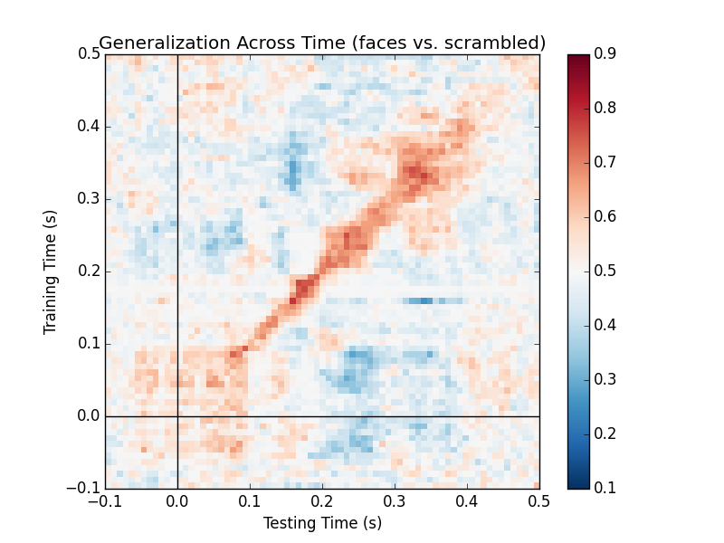

Contents
For maximal compatibility with the Scikit-learn package, we follow the same API. Each estimator implements a fit, a transform and a fit_transform method. In some cases, they also implement an inverse_transform method. For more details, visit the Scikit-learn page.
For ease of comprehension, we will denote instantiations of the class using the same name as the class but in small caps instead of camel cases.
This will standardize data across channels. Each channel type (mag, grad or eeg) is treated separately. During training time, the mean (ch_mean_) and standard deviation (std_) is computed in the fit method and stored as an attribute to the object. The transform method is called to transform the training set. To perform both the fit and transform operations in a single call, the fit_transform method may be used. During test time, the stored mean and standard deviation are used in the transform method. To recover the original data, you can use inverse_transform.
Note
This is different from the StandarScaler estimator offered by Scikit-Learn. The StandardScaler standardizes each feature, whereas the Scaler object standardizes by channel type.
Scikit-learn API provides functionality to chain transformers and estimators by using sklearn.pipeline.Pipeline. We can construct decoding pipelines and perform cross-validation and grid-search. However scikit-learn transformers and estimators generally expect 2D data (n_samples * n_features), whereas MNE transformers typically output data with a higher dimensionality (e.g. n_samples * n_channels * n_frequencies * n_times). A Vectorizer therefore needs to be applied between the MNE and the scikit-learn steps: e.g: make_pipeline(Xdawn(), Vectorizer(), LogisticRegression())
This estimator computes the power spectral density (PSD) using the multitaper method. It takes a 3D array as input, it into 2D and computes the PSD.
This estimator filters the 3D epochs data.
Warning
This is meant for use in conjunction with RtEpochs. It is not recommended in a normal processing pipeline as it may result in edge artifacts.
Just like temporal filters, spatial filters provide weights to modify the data along the sensor dimension. They are popular in the BCI community because of their simplicity and ability to distinguish spatially-separated neural activity.
This is a technique to analyze multichannel data based on recordings from two classes. Let \(X \in R^{C\times T}\) be a segment of data with \(C\) channels and \(T\) time points. The data at a single time point is denoted by \(x(t)\) such that \(X=[x(t), x(t+1), ..., x(t+T-1)]\). Common Spatial Pattern (CSP) finds a decomposition that projects the signal in the original sensor space to CSP space using the following transformation:
where each column of \(W \in R^{C\times C}\) is a spatial filter and each row of \(x_{CSP}\) is a CSP component. The matrix \(W\) is also called the de-mixing matrix in other contexts. Let \(\Sigma^{+} \in R^{C\times C}\) and \(\Sigma^{-} \in R^{C\times C}\) be the estimates of the covariance matrices of the two conditions. CSP analysis is given by the simultaneous diagonalization of the two covariance matrices
where \(\lambda^{C}\) is a diagonal matrix whose entries are the eigenvalues of the following generalized eigenvalue problem
Large entries in the diagonal matrix corresponds to a spatial filter which gives high variance in one class but low variance in the other. Thus, the filter facilitates discrimination between the two classes.
Examples:
Spotlight:
The winning entry of the Grasp-and-lift EEG competition in Kaggle uses the CSP implementation in MNE. It was featured as a script of the week.
Xdawn is a spatial filtering method designed to improve the signal to signal + noise ratio (SSNR) of the ERP responses. Xdawn was originally designed for P300 evoked potential by enhancing the target response with respect to the non-target response. The implementation in MNE-Python is a generalization to any type of ERP.
Examples:
The result is a spatial filter at each time point and a corresponding time course. Intuitively, the result gives the similarity between the filter at each time point and the data vector (sensors) at that time point.
When interpreting the components of the CSP, it is often more intuitive to think about how \(x(t)\) is composed of the different CSP components \(x_{CSP}(t)\). In other words, we can rewrite Equation (1) as follows:
The columns of the matrix \((W^{-1})^T\) are called spatial patterns. This is also called the mixing matrix. The example Linear classifier on sensor data with plot patterns and filters demonstrates the difference between patterns and filters.
Plotting a pattern is as simple as doing:
>>> info = epochs.info
>>> model.plot_patterns(info) # model is an instantiation of an estimator described in this section

To plot the corresponding filter, you can do:
>>> model.plot_filters(info)

Generalization Across Time (GAT) is a modern strategy to infer neuroscientific conclusions from decoding analysis of sensor-space data. An accuracy matrix is constructed where each point represents the performance of the model trained on one time window and tested on another.
To use this functionality, simply do:
>>> gat = GeneralizationAcrossTime(predict_mode='cross-validation', n_jobs=1)
>>> gat.fit(epochs)
>>> gat.score(epochs)
>>> gat.plot(vmin=0.1, vmax=0.9, title="Generalization Across Time (faces vs. scrambled)")
In this strategy, a model trained on one time window is tested on the same time window. A moving time window will thus yield an accuracy curve similar to an ERP, but is considered more sensitive to effects in some situations. It is related to searchlight-based approaches in fMRI. This is also the diagonal of the GAT matrix.

To generate this plot, you need to initialize a GAT object and then use the method plot_diagonal:
>>> gat.plot_diagonal()
Source space decoding is also possible, but because the number of features can be much larger than in the sensor space, univariate feature selection using ANOVA f-test (or some other metric) can be done to reduce the feature dimension. Interpreting decoding results might be easier in source space as compared to sensor space.
Examples:
{kind=link}